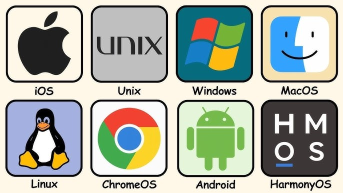

OS is an essential system software that manages hardware and sofrware resources, acting as a manager for computer tasks.
So why do we need OS, can't computer work on its own? Turns out, OS have 4 main responsibilities:
- Resource management: allocation RAM for different apps, prevents data overwriting
- Process management: oversees program execution, schedules CPU time, manage multiple processes efficiently
- File System management: handles file access, permissions, storage devices interations, ensuring that data is organized and secured
- User interface: provides GUI for general users and CLI for developers
DIfferent OS
Desktop OS examples: Windows, macOS, Linux.
Mobile OS: iOS, Android.
Embedded OS: IoT devices, routers, smart appliances.
